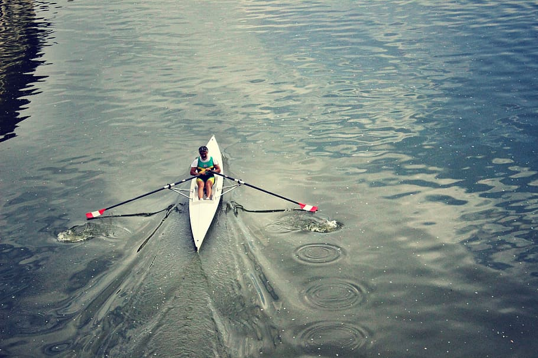

The official site of World Rowing - worldrowing.com
The Official website of FISA, the international rowing federation. Latest world rowing news.

As we celebrate the sport of rowing, we want to see what people can do in their rowing boats or on the indoor rowing machine. Can do you do a headstand in the boat? Can you take one oar out without flipping? Can you turn your oars a full circle while rowing?
Latest News
Qualification details for 2021 World Rowing Indoor Championships
Rowing through change: from uncertainty to hope
Entries are in for the 2020 European Rowing Junior Championships